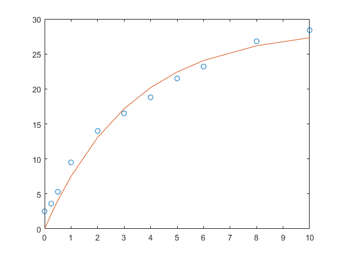

Contents
%Mohammed Safdar Khan %20PKB204 %GJ3466 x=[0 0.25 0.5 1 2 3 4 5 6 8 10]; y=[2.5 3.6 5.3 9.5 14.0 16.5 18.8 21.5 23.2 26.8 28.4];
1a
parameters = fitt(x,y)
1b
l = residbar(x,y) r = resid; bar(x,r)
l =
2.6522 5.8796
1c
j=residbar(x,y) residsq=(resid.^2) residsum = sum(residsq)
j =
2.6522 5.8796
residsq =
Columns 1 through 7
11.4218 8.6592 3.6317 0.9374 7.9300 7.0960 5.3438
Columns 8 through 11
5.5671 1.9805 0.0883 16.0115
residsum =
68.6673
1d
create a function to fit the data in 1,2,3 polyfit
for t = [1 2 3] g = fitall(x,y,t); end
ans =
'The sum of squares for 1 degree fit is 9.196089e-01'
ans =
'The sum of squares for 2 degree fit is 9.899185e-01'
ans =
'The sum of squares for 3 degree fit is 9.953975e-01'
1e
%The 3rd order polynomial gives the best fit in terms of lowest sum of square of residuals
2a
f = @(C,alpha,x) C*(1-exp(-alpha*x)); obj_fun = @(params) norm(f(params(1),params(2),x)-y); sol = fminsearch(obj_fun, [10 2]); parameter_1 = sol(1) parameter_2 = sol(2) figure(1); plot (x,y,'o') hold on plot(x,f(parameter_1, parameter_2,x), '-')
parameter_1 =
28.6859
parameter_2 =
0.3043
 2b
Using Occam's razor the polyfit model with degree 2 and 3 should be rejected since it has 3 and 4 parameters respectively, while polyfit model with deree 1 and the exponential equation model have 2 parameters,
%but the exponential model has a better fit than the polyfit model with degree 1. %Therefore only the exponential model should be considered as per Occam's Razor % If number of parameters is more important than the best fit, then the % exponential model is best because it has the minimum number of % parameters but still gives a better fit than the polynomial with degree % 1 %If best fit is important then the polynomial with degree 3 is best
2c
X=[0 0.25 0.5 1 2 3 4 5 6 8 10 12 16 21]; Y=[2.5 3.6 5.3 9.5 14.0 16.5 18.8 21.5 23.2 26.8 28.4 28.4 28.5 29.5]; C = 28.6859; alpha = 0.3043; f = @(x) C*(1-exp(-alpha*x)) plot (X,Y,'o') hold on fplot(f) ylim([0 30]) title('Exponential Model') figure(7) hold off for t = [1 2 3] g = fita(x,y,t,X,Y); end
f =
function_handle with value:
@(x)C*(1-exp(-alpha*x))

functions
function [m,s] = fitt(x,y) m = polyfit(x,y,1); s = polyval(m,x); plot(x,y, 'o') hold on plot (x,s) hold off end function [m,s,r] = residbar(x,y) m = polyfit(x,y,1); s = polyval(m,x); r = s-y; assignin('base','resid',r) % hold off end function [m,s,r,ymean,sq,ressq,sumrs,totalsumsq,r_sqr] = fitall(x,y,k) m = polyfit(x,y,k); s = polyval(m,x);%ynew ymean = sum(y)/length(x); sq = (y-ymean).^2; totalsumsq = sum(sq); r=y-s; ressq = r.^2; sumrs = sum(ressq); %r square r_sqr = 1-(sumrs/totalsumsq); sprintf('The sum of squares for %d degree fit is %d',k,r_sqr) plot(x,y,'o', x,s) caption = sprintf('%d degree polynomial' , k); title(caption) figure(k) end function [m,s] = fita(x,y,l,X,Y) m = polyfit(x,y,l); s = polyval(m,X); plot(X,Y,'o', X,s) caption = sprintf('%d degree polynomial' , l); title(caption) figure(l+4) end
parameters =
2.6522 5.8796